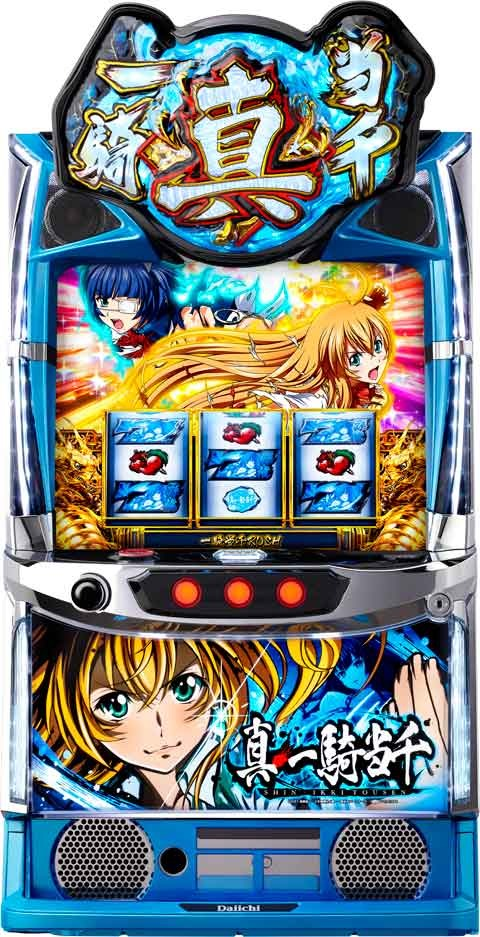
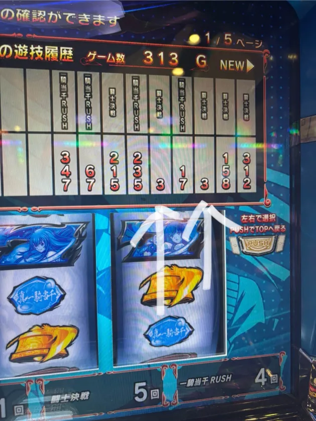
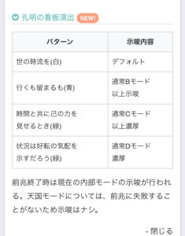
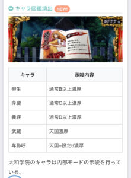

L真・一騎当千


狙い目
【リセット狙い】
110Gから
【AT間天井狙い】
750Gから
獲得枚数500枚以下かつ非駆け抜け後 680Gから
モードB以上 580Gから
駆け抜け後(モードC) 300Gから
趙雲ループ後(モードD) 110Gから
※駆け抜け後、趙雲ループ後の履歴の見方は下記参照。
【闘士ポイント狙い】
勾玉が赤なら単体で闘士チャレンジ消化まで？
緑は少しボーダー下げる感じ？
【ゾーン狙い】
100ゾーン 90Gから？
200ゾーン 210Gから？
400ゾーン 410Gから？
600ゾーン 580Gから
※600ゾーンでCZ当選時はCZ当選でやめ。CZ非当選時はモードCの可能性が上がるため700ゾーン消化まで続行？
【有利区間切れ狙い】
不明
やめ時
基本即やめ。
勾玉が緑以上なら天国確認も兼ねて打つのはあり？
その他
規定ゲーム数、モード

駆け抜け後履歴
17:42RB
17:43ART
駆け抜けはこの様な履歴

趙雲ループ後履歴
RB30以内は趙雲ループ濃厚
30-40も趙雲ループ？
12:43RBからループしている履歴

趙雲ループ時は、下記の画像の様に「３G」騎士決戦の履歴が付くと思われる。

キャラ図鑑演出

孔明の看板演出

参考元
基本情報
- メーカー: Daiichi Daiichiの掲載機種一覧
- 機械割: 97.6% 〜 112.0%
- 導入開始日: 2024年10月07日（月）
- ゲーム性概要: STタイプのAT機として『L 真・一騎当千』が登場。 ボーナスが高確率でループする上位AT「（真）昇龍モード」やツラヌキ時に突入する「趙雲ループ」など、多彩なトリガーにも注目だ。


打ち方
打ち方・小役
打ち方（小役狙い）
［最初に狙う絵柄］

スイカをこぼす可能性がある19番以外の青7を枠内に目押し。スイカ停止時のみ中・右リールにスイカを狙おう。
［スイカ停止時］

［レア役の停止例］

変則押しはNG

基本的に通常時は左1stでの消化を推奨だ。
解析情報通常時
小役関連
［設定差なし］レア確率
| 役 | 確率 |
|---|---|
| 単チェリー | 1/93.2 |
| 2連チェリー | 1/155.3 |
| 3連チェリー | 1/319.7 |
| 弱スイカ | 1/128.0 |
| 強スイカ | 1/655.4 |
| 弱チャンス目 | 1/256.0 |
| 強チャンス目 | 1/6553.6 |
※レア役合算確率は1/29.7
2種類の共通ベル（1枚・11枚）にのみ設定差が存在する。
内部状態関連
闘士ポイント高確
通常時はベルと弱レア役で闘士ポイント高確への移行を抽選（メイン契機はスイカ）。高確はゲーム数管理で、高確中に再度高確に当選した場合はゲーム数が加算される。
闘士ポイント高確移行率
| 役 | 10G | 20G | トータル |
|---|---|---|---|
| ベル | 0.4% | 0.4% | 0.8% |
| 単チェリー | 4.7% | 4.7% | 9.4% |
| 2連チェリー | 4.7% | 4.7% | 9.4% |
| 弱スイカ | 37.5% | 12.5% | 50.0% |
モード
通常モード
通常時は設定変更時・AT終了後に決まる5種類の通常モードでCZ当選のゲーム数テーブルとAT当選の天井ゲーム数が管理されている。 設定変更後はランダムでゲーム数が減算されるため、CZやATの発動がずれる場合がある。
AT天井
| モード | 天井ゲーム数 |
|---|---|
| 通常A | 1000G＋α |
| 通常B | 900G＋α |
| 通常C | 700G＋α |
| 通常D | 400G＋α |
| 天国 | 100G＋α |
CZ当選のゲーム数テーブル期待度（周期抽選）
| ゲーム数 | 通常A | 通常B | 通常C | 通常D | 天国 |
|---|---|---|---|---|---|
| 100G | 33%超 | 33%超 | 33%超 | 低め | 天井 |
| 200G | 60%超 | 33%超 | 33%超 | 33%超 | |
| 300G | 10%超 | 60%超 | 33%超 | 低め | |
| 400G | 33%超 | 60%超 | 60%超 | 天井 | |
| 500G | 10%超 | 10%超 | 60%超 | ||
| 600G | 60%超 | 60%超 | 低め | ||
| 700G | 10%超 | 10%超 | 天井 | ||
| 800G | 33%超 | 低め | |||
| 900G | 低め | 天井 | |||
| 1000G | 天井 |
通常モードの注目ポイント
| 項目 | ポイント |
|---|---|
| テーブル関連 | ● 通常A～Cの100G到達時CZ期待度は40％以上 |
| 設定変更時 | ● ランダムでゲーム数が減算される ● 天国スタートの場合は設定1を否定 |
| AT駆け抜け時 | ● 必ず通常C以上へ移行 |
闘士レベル
有利区間移行時、AT終了時、闘士決戦（CZ）失敗時に4段階の闘士レベルを抽選（LV.1〜軍神）。 レベルに応じてCZに登場する味方闘士の振り分けが変化 する。闘士チャレンジはレベル不問で味方闘士を決定するが、現在の闘士レベルより低い闘士が選ばれた場合はCZ開始時にレベルに応じたキャラに書き換えられる。 軍神はAT終了時・CZ失敗時でも約80%でループするため、CZで関羽が登場した場合は要注目。軍神を示唆する演出も複数存在する。
闘士レベルごとのCZ中・登場味方闘士
| 闘士レベル | 味方闘士 |
|---|---|
| LV.0 | 全キャラ |
| LV.1 | 全キャラ |
| LV.2 | 呂蒙以上 |
| 軍神 | 関羽濃厚 |
軍神の示唆演出はコチラ
［設定変更時］モード移行率
| 設定 | 通常A | 通常B | 通常C | 通常D | 天国 |
|---|---|---|---|---|---|
| 1 | － | － | － | 100% | － |
| 2 | － | － | － | 98.4% | 1.6% |
| 3 | － | － | － | 98.4% | 1.6% |
| 4 | － | － | － | 96.9% | 3.1% |
| 5 | － | － | － | 96.9% | 3.1% |
| 6 | － | － | － | 96.9% | 3.1% |
［AT後を含んだトータル］モード移行率
| 設定 | 通常A | 通常B | 通常C | 通常D | 天国 |
|---|---|---|---|---|---|
| 1 | 48.7% | 13.3% | 35.1% | 2.2% | 0.7% |
| 2 | 46.7% | 13.3% | 37.1% | 2.2% | 0.6% |
| 3 | 39.3% | 16.8% | 41.1% | 2.2% | 0.6% |
| 4 | 35.5% | 16.8% | 42.8% | 2.5% | 2.5% |
| 5 | 29.4% | 21.0% | 44.7% | 2.5% | 2.5% |
| 6 | 28.6% | 21.0% | 45.4% | 2.5% | 2.5% |
ゲーム数テーブル振り分け
| ゲーム数 | 通常A | 通常B | 通常C | 通常D | 天国 |
|---|---|---|---|---|---|
| 100G | 40.23% | 40.23% | 40.23% | 6.25% | 天井 |
| 200G | 66.41% | 33.62% | 33.62% | 40.26% | |
| 300G | 10.16% | 66.43% | 33.62% | 0.42% | |
| 400G | 40.23% | 66.41% | 66.41% | 天井 | |
| 500G | 10.16% | 10.18% | 66.43% | ||
| 600G | 66.41% | 66.43% | 0.42% | ||
| 700G | 10.16% | 10.16% | 天井 | ||
| 800G | 33.59% | 0.39% | |||
| 900G | 0.39% | 天井 | |||
| 1000G | 天井 |
龍玉＆勾玉
龍玉＆勾玉概要

通常時はゲーム数消化とレア役でCZを抽選。ゲーム数消化は龍玉の発光でCZ前兆を、レア役時は内部的に闘士ポイントが加算され、勾玉の発光＆色で闘士チャレンジ前兆が示唆される。
龍玉・勾玉
| 要素 | 解説 |
|---|---|
| 龍玉 | ● ゲーム数消化で発光 ● オーラは小＜中＜大で本前兆期待度アップ ● 規定ゲーム数到達でCZへ ● 1000G＋αで天井（AT当選） |
| 勾玉 | ● レア役で貯まる闘士ポイントに対応して発光 ● 勾玉の色は青・緑・赤の3種類 ● 規定ポイント到達で闘士チャレンジへ ● 役の序列は弱チェリー・スイカ＜2連チェリー＜弱チャンス目＜3連チェリー・強スイカ＜強チャンス目 |
レア役ごとの闘士ポイント
| 役 | 獲得ポイント |
|---|---|
| 単チェリー | 5or10or30or50or150pt （高確中は10pt以上） |
| スイカ | 5or10or30or50or150pt （高確中は10pt以上） |
| 2連チェリー | 10or30or50or150pt |
| 弱チャンス目 | 10or30or50or150pt |
| 強スイカ | 50or150pt |
| 3連チェリー | 50or150pt |
| 強チャンス目 | 150pt （こうめいちゃんす濃厚） |
闘士ポイント振り分け
高確中と勾玉の導き中は獲得する闘士ポイントが大幅にアップ。 また、レア役時のポイント抽選とは別に、押し順ベル成立時は内部的にポイントを蓄積して、レア役時に放出するという要素があるため、下表以上にポイントを獲得できる場合もある。
闘士ポイント振り分け 通常滞在時
| ポイント | 単チェリー | スイカ | 2連チェリー |
|---|---|---|---|
| 5pt | 98.4% | 99.2% | － |
| 10pt | 0.8% | 0.4% | 93.8% |
| 30pt | 0.4% | 0.2% | 5.9% |
| 50pt | 0.2% | 0.2% | 0.2% |
| 150pt | 0.2% | － | 0.2% |
| ポイント | 弱チャンス目 | 強スイカ | 3連チェリー |
| 5pt | － | － | － |
| 10pt | 50.0% | － | － |
| 30pt | 46.9% | － | － |
| 50pt | 2.3% | 62.5% | 75.0% |
| 150pt | 0.8% | 37.5% | 25.0% |
高確滞在時
| ポイント | 単チェリー | スイカ | 2連チェリー |
|---|---|---|---|
| 5pt | － | － | － |
| 10pt | 98.0% | 99.2% | 80.1% |
| 30pt | 1.6% | 0.4% | 19.5% |
| 50pt | 0.2% | 0.2% | 0.2% |
| 150pt | 0.2% | 0.2% | 0.2% |
| ポイント | 弱チャンス目 | 強スイカ | 3連チェリー |
| 5pt | － | － | － |
| 10pt | 33.6% | － | － |
| 30pt | 62.5% | － | － |
| 50pt | 2.3% | － | － |
| 150pt | 1.6% | 100% | 100% |
勾玉の導き滞在時
| ポイント | 単チェリー | スイカ | 2連チェリー |
|---|---|---|---|
| 5pt | － | － | － |
| 10pt | 93.8% | 99.2% | － |
| 30pt | 5.9% | 0.4% | 99.2% |
| 50pt | 0.2% | 0.2% | 0.4% |
| 150pt | 0.2% | 0.2% | 0.4% |
| ポイント | 弱チャンス目 | 強スイカ | 3連チェリー |
| 5pt | － | － | － |
| 10pt | － | － | － |
| 30pt | 95.3% | － | － |
| 50pt | 3.1% | － | － |
| 150pt | 1.6% | 100% | 100% |
※状態不問で強チャンス目は150pt獲得かつ「こうめいちゃんす」濃厚
闘士チャレンジ
闘士チャレンジ概要

7G/セットのST型CZ高確ゾーンで、リプレイやレア役で1段階アップさせることができればCZ濃厚。以降は段階を上げるごとにCZの闘士がランクアップする。6段階目以降到達でAT濃厚、段階が上がるほどAT時の恩恵がアップする。
闘士チャレンジ性能
| 項目 | 内容 |
|---|---|
| 当選契機 | 規定闘士ポイント到達（勾玉） |
| 継続ゲーム数 | 7G/セットのST |
| 消化中の抽選 | リプレイの約50%でランクアップ、 レア役・青7揃いはランクアップ濃厚 |
| その他 | 1段階アップでCZ濃厚、6段階目以降はAT濃厚 ※1契機で最大6段階アップ |
［ランクアップ抽選］

ランクアップ当選率
| ランク | リプレイ | 単チェリー | 2連チェリー | 3連チェリー |
|---|---|---|---|---|
| 1段階UP | 50.0% | 25.0% | 66.4% | － |
| 2段階UP | 0.002% | － | － | 99.2% |
| 3段階UP | 0.002% | － | － | 0.2% |
| 4段階UP | 0.002% | － | － | 0.2% |
| 5段階UP | 0.002% | － | － | 0.2% |
| 6段階UP | 0.002% | 0.006% | 0.006% | 0.2% |
| ランク | 弱スイカ | 強スイカ | 弱チャンス目 | 強チャンス目 |
| 1段階UP | 50.0% | － | 99.6% | － |
| 2段階UP | 0.2% | 87.5% | － | － |
| 3段階UP | － | 10.2% | 0.2% | － |
| 4段階UP | － | 2.0% | － | － |
| 5段階UP | － | 0.2% | － | － |
| 6段階UP | － | 0.2% | 0.2% | 100% |
※闘士決戦・こうめいちゃんす・バーストアタックで抽選値は共通 ※関羽を超えるとセブンラッシュで孫権が登場（実戦上）
レア役の一部で一気に6段階アップ（AT濃厚）する可能性もある。
闘士決戦（CZ）
闘士決戦概要

15G＋αのバトル型CZで、小役の組み合わせによって攻撃パターンが変化。味方は上位のキャラほど強い技を発動しやすく、敵は勝ちやすいキャラほどHPが低い。 敵のHPを0にできればAT濃厚、終了までに0にできなかった場合でもファイナルジャッジでダメージ量に応じてATを抽選。 ちなみに、ファイナルジャッジ中のレア役も、内部的にCZ消化中と同じく技発動抽選をおこなっている。
闘士決戦（CZ）性能
| 項目 | 内容 |
|---|---|
| 当選契機 | 闘士チャレンジ成功、規定ゲーム数 |
| 継続ゲーム数 | 15G＋α |
| AT平均当選期待度 | 約45% |
| 消化中の抽選 | 成立役の組み合わせでダメージ抽選、 小役4連続でAT濃厚（EXゲージMAX） |
| 成功時の恩恵 | AT当選 |
闘士決戦初当り確率
| 設定 | 確率 |
|---|---|
| 1 | 1/153.5 |
| 2 | 1/148.3 |
| 3 | 1/137.6 |
| 4 | 1/115.3 |
| 5 | 1/110.1 |
| 6 | 1/105.3 |
味方闘士
| 闘士 | 期待度 |
|---|---|
| 孫策 | 低 |
| 呂蒙 | ↓ |
| 張飛 | ↓ |
| 趙雲 | ↓ |
| 関羽 | 高 |
敵闘士
| 闘士 | HP |
|---|---|
| 典韋 | 2000 |
| 夏侯淵 | 1500 |
| 曹仁 | 1000 |
［対戦カード］

［小役の組み合わせ］

組み合わせ（引く順番）はリールの下側に表示されている。
［EXゲージ］

リプレイやベルを引くとゲージが1つ点灯（青がリプレイ/黄がベル）。同じ色が4連続すると奥義が発動してAT濃厚となる。
［ファイナルジャッジ］

ゲーム数がなくなった状態でハズレを2連続で引くとファイナルジャッジへ移行。敵に攻撃されて味方が倒れればCZ終了だが、耐えた場合は継続となる。
闘士ごとの技（小役の組み合わせ）
小役の組み合わせに加え、レア役時は弱技以上の発生濃厚。技が発生しても成立役キープされているので、次の役次第でコンボのように技が発生するパターンもある。

キャラ＆技ごとのダメージ量
| 闘士 | 弱技 | 中技 | 強技 | 奥義 |
|---|---|---|---|---|
| 孫策 | 200 | 300 | 600 | 撃破濃厚 |
| 呂蒙 | 200 | 300 | 500 | 撃破濃厚 |
| 張飛 | － | － | 800 | 撃破濃厚 |
| 趙雲 | － | 300 | － | 撃破濃厚 |
| 関羽 | － | － | － | 撃破濃厚 |
レア役時の技選択率分布 孫策・呂蒙
| 役 | 弱技 | 中技 | 強技 | 奥義 |
|---|---|---|---|---|
| 単チェリー | 93.6% | 6.3% | 0.1% | － |
| 2連チェリー | － | 98.4% | 1.2% | 0.4% |
| 3連チェリー | － | － | 87.5% | 12.5% |
| 弱スイカ | 93.6% | 6.3% | 0.1% | － |
| 強スイカ | － | － | 75.0% | 25.0% |
| 弱チャンス目 | － | 93.8% | 3.1% | 3.1% |
| 強チャンス目 | － | － | － | 100% |
張飛
| 役 | 弱技 | 中技 | 強技 | 奥義 |
|---|---|---|---|---|
| 単チェリー | － | － | 100% | － |
| 2連チェリー | － | － | 99.6% | 0.4% |
| 3連チェリー | － | － | 87.5% | 12.5% |
| 弱スイカ | － | － | 100% | － |
| 強スイカ | － | － | 75.0% | 25.0% |
| 弱チャンス目 | － | － | 96.9% | 3.1% |
| 強チャンス目 | － | － | － | 100% |
趙雲
| 役 | 弱技 | 中技 | 強技 | 奥義 |
|---|---|---|---|---|
| 単チェリー | － | 99.9% | － | 0.1% |
| 2連チェリー | － | 98.4% | － | 1.6% |
| 3連チェリー | － | － | － | 100% |
| 弱スイカ | － | 99.9% | － | 0.1% |
| 強スイカ | － | － | － | 100% |
| 弱チャンス目 | － | 93.8% | － | 6.3% |
| 強チャンス目 | － | － | － | 100% |
関羽
| 役 | 弱技 | 中技 | 強技 | 奥義 |
|---|---|---|---|---|
| 単チェリー | － | － | － | 100% |
| 2連チェリー | － | － | － | 100% |
| 3連チェリー | － | － | － | 100% |
| 弱スイカ | － | － | － | 100% |
| 強スイカ | － | － | － | 100% |
| 弱チャンス目 | － | － | － | 100% |
| 強チャンス目 | － | － | － | 100% |
闘士ごとの技別・ダメージ量振り分け 孫策
| ダメージ | 弱技 | 中技 | 強技 |
|---|---|---|---|
| 200 | 68.8% | － | － |
| 300 | 18.8% | 50.0% | － |
| 400 | 10.2% | 12.5% | － |
| 500 | 0.8% | 25.0% | － |
| 600 | 1.6% | 6.3% | 37.5% |
| 700 | － | 6.3% | 31.3% |
| 800 | － | － | 12.5% |
| 900 | － | － | 12.5% |
| 1000 | － | － | 6.3% |
呂蒙
| ダメージ | 弱技 | 中技 | 強技 |
|---|---|---|---|
| 200 | 99.2% | － | － |
| 300 | 0.2% | 99.2% | － |
| 400 | 0.2% | 0.2% | － |
| 500 | 0.2% | 0.2% | 98.7% |
| 600 | 0.2% | 0.2% | 0.4% |
| 700 | － | 0.2% | 0.4% |
| 800 | － | － | 0.4% |
| 900 | － | － | 0.05% |
| 1000 | － | － | 0.05% |
張飛
| ダメージ | 弱技 | 中技 | 強技 |
|---|---|---|---|
| 200 | － | － | － |
| 300 | － | － | － |
| 400 | － | － | － |
| 500 | － | － | － |
| 600 | － | － | － |
| 700 | － | － | － |
| 800 | － | － | 75.0% |
| 900 | － | － | － |
| 1000 | － | － | 25.0% |
趙雲
| ダメージ | 弱技 | 中技 | 強技 |
|---|---|---|---|
| 200 | － | － | － |
| 300 | － | 62.5% | － |
| 400 | － | 15.6% | － |
| 500 | － | 14.1% | － |
| 600 | － | 6.3% | － |
| 700 | － | 1.6% | － |
| 800 | － | － | － |
| 900 | － | － | － |
| 1000 | － | － | － |
奥義は発動すれば撃破濃厚。関羽は奥義のみなので技発動＝勝利濃厚となる。
［奥義］

関羽はレア役を引いた時点で奥義発生＝勝利濃厚だ。
［技決定］

こうめいちゃんす（確定CZ）
こうめいちゃんす概要

強レア役の一部で突入するAT濃厚のCZ。7G/セットのST型で、ランクアップさせるほど上位の恩恵が付与される。
こうめいちゃんす（確定CZ）性能
| 項目 | 内容 |
|---|---|
| 当選契機 | 強レア役の一部 |
| 継続ゲーム数 | 7G/セットのST |
| AT当選期待度 | 100%（セブンラッシュ濃厚） |
| 消化中の抽選 | リプレイとレア役でセブンラッシュの ランクアップ抽選 |
ランクアップ当選率
※闘士決戦・こうめいちゃんす・バーストアタックで抽選値は共通 ※関羽を超えるとセブンラッシュで孫権が登場（実戦上）
セブンラッシュのランクアップが抽選される。
勾玉の導き（引き戻しゾーン）
勾玉の導き概要

CZやAT失敗時に突入する闘士ポイント高確ゾーンで、通常時と同じく規定ポイント到達で闘士チャレンジに当選。滞在中のレア役で特殊CZ「呂布覚醒ゾーン」を抽選する。
勾玉の導き（引き戻しゾーン）性能
| 項目 | 内容 |
|---|---|
| 移行契機 | CZ失敗後・AT終了後 |
| 継続ゲーム数 | 10G～60G |
| 消化中の抽選 | 全役で闘士ポイント抽選（規定ポイントでCZ）、 レア役で呂布覚醒ゾーン抽選 |
| 呂布覚醒ゾーン 当選確率 | 約1/753 |
成立役ごとの闘士チャレンジ以上期待度序列
| 役 | 期待度序列 |
|---|---|
| 単チェリー | ★★☆☆☆ |
| 2連チェリー | ★★☆☆☆ |
| 3連チェリー | ★★★★☆ 闘士チャレンジor呂布覚醒ゾーン濃厚 |
| 弱スイカ | ★★☆☆☆ 呂布覚醒ゾーン当選のチャンス |
| 強スイカ | ★★★★☆ 闘士チャレンジor呂布覚醒ゾーン濃厚 |
| 弱チャンス目 | ★★☆☆☆ |
| 強チャンス目 | ★★★★★ 呂布覚醒ゾーン濃厚 |
継続ゲーム数

勾玉の導きが30G以上継続した時点で設定2以上濃厚。60Gまで継続すれば設定6濃厚だ。
呂布覚醒ゾーン当選率
| 役 | 当選率 |
|---|---|
| 弱スイカ | 12.5% |
| 強スイカ | 12.5% （ハズれても闘士チャレンジ濃厚） |
スイカ時の12.5%で呂布覚醒ゾーンに当選。強スイカは非当選だった場合でも闘士ポイントを150pt獲得できるため、闘士チャレンジへ移行する。
［AT終了後］勾玉の導き継続ゲーム数振り分け
30G以上が選択されるのは設定3以上のみ。もちろんゲーム数が長いほど引き戻し期待度もアップする。
呂布覚醒ゾーン（特殊CZ）
呂布覚醒ゾーン概要

7G固定の高期待度CZで、毎ゲーム全役でATを抽選。失敗しても勾玉の導きのゲーム数が残っていれば、勾玉の導きへ復帰する。
呂布覚醒ゾーン（特殊CZ）性能
| 項目 | 内容 |
|---|---|
| 移行契機 | 勾玉の導き中のレア役の一部など |
| 継続ゲーム数 | 7G |
| AT当選期待度 | 約80% |
| 消化中の抽選 | 全役でATを抽選 |
［呂布覚醒ゾーン］AT当選率
| 役 | 当選率 |
|---|---|
| リプレイ | 50.0% |
| ベル | 50.0% |
| レア役 | 100% |
リプレイorベルでも大チャンス、レア役を引けばAT濃厚だ。

成功時はフリーズが発生する。
演出動画
ロングフリーズ
セブンラッシュの孫権登場濃厚となるプレミアム演出。平均上乗せ枚数は1770枚と超強力だ。
フリーズ
ロングフリーズ


ロングフリーズ性能
| 項目 | 内容 |
|---|---|
| 発生契機 | 強チャンス目の5.0%（通常時のみ） |
| 恩恵 | セブンラッシュの孫権濃厚 |
解析情報ボーナス時
一騎当千ボーナス（初当り時導入）
一騎当千ボーナス概要

AT初当り時は約50枚の一騎当千ボーナスを経由して一騎当千ラッシュ（AT）へ突入する。
一騎当千ラッシュ（AT）
一騎当千ラッシュ概要

30G＋αのST型ATで、ボーナスを引けばセット継続。基本的にベル連続やレア役でCZを引き当て、CZを成功させてボーナスをゲットする流れ。 開始時は2種類の告知モードを選択することができる。
一騎当千ラッシュ（AT）性能
| 項目 | 内容 |
|---|---|
| 移行契機 | 通常時の直撃、CZ成功など |
| 継続ゲーム数 | 30G＋α |
| 平均継続期待度 | 70%以上 |
| 消化中の抽選 | 成立役に応じてボーナスとCZを抽選 |
最終ゲームでのレア役はCZ当選濃厚となる。
［モード選択］

［押し順ベルの仕組み］

内部的に複数の押し順ベルが存在していて、特定のベル（ベルB）当選時は必ずナビが発生。さらに、ベル入賞の次ゲームは押し順ベルの種類不問で必ずナビが発生する。
AT中CZのトータル当選確率
| 契機 | 確率 |
|---|---|
| トータル | 1/17.3 |
成立役別・AT中CZ当選率
| 役 | 当選率 |
|---|---|
| ベル2連 | 39.0% |
| 単チェリー | 46.5% |
| 2連チェリー | 60.5% |
| 3連チェリー | 100% |
| 弱スイカ | 51.0% |
| 強スイカ | 100% |
| 弱チャンス目 | 64.2% |
| 強チャンス目 | バーストアタック濃厚 |
CZ当選契機役ごとの対応ボーナス＆CZレベル
AT中はどの役でCZに当選したかによって、 対決レベル＆突破レベル 、 CZ成功時のボーナス種別 （当千ボーナスorセブンラッシュ）が変化。 対決レベルは4段階で、1〜3は関西決戦（高いほど成功期待度が高い）、レベル4なら趙雲ゾーンへ移行する。突破レベルは高レベルほどCZ最終ゲームでの勝利書き換え抽選が優遇。 強レア役はCZレベル3以上かつCZ成功でセブンラッシュ濃厚 となるのでかなりアツい。 ちなみに、関西決戦はレベルと対戦相手が完全にリンクしているわけではないので、強い敵でも内部的に高レベルである可能性もある。強レア役はCZ当選濃厚かつ成功すればセブンラッシュへ移行する。
AT中CZ当選契機ごとの成功時ボーナス種別
| 役 | 成功時のボーナス |
|---|---|
| ベル2連 | 全ボーナス |
| 単チェリー | 全ボーナス |
| 2連チェリー | 全ボーナス |
| 3連チェリー | セブンラッシュの孫策以上濃厚 |
| スイカ | 全ボーナス |
| 強スイカ | セブンラッシュの呂蒙以上濃厚 |
| 弱チャンス目 | 全ボーナス |
| 強チャンス目 | バーストアタック濃厚 |
成功時のボーナス種別はCZ当選時に決まっているが、本前兆中はCZ種別とともに勝利時の報酬の格上げが抽選される。
CZ当選契機ごとの［対決レベル］振り分け
| 役 | LV.1 | LV.2 | LV.3 | LV.4 |
|---|---|---|---|---|
| ベル2連 | 57.42% | 37.50% | 4.69% | 0.39% |
| 単チェリー | 62.11% | 31.25% | 6.25% | 0.39% |
| 2連チェリー | 62.11% | 31.25% | 6.25% | 0.39% |
| 3連チェリー | － | 87.50% | 10.16% | 2.34% |
| 弱スイカ | 62.11% | 31.25% | 6.25% | 0.39% |
| 強スイカ | － | － | 87.50% | 12.50% |
| 弱チャンス目 | 52.73% | 37.50% | 9.38% | 0.39% |
※AT中の強チャンス目はバーストアタック濃厚
CZ当選契機ごとの［突破レベル］振り分け
| 役 | LV.1 | LV.2 | LV.3 |
|---|---|---|---|
| ベル2連 | 98.05% | 1.56% | 0.39% |
| 単チェリー | 96.48% | 3.13% | 0.39% |
| 2連チェリー | 91.41% | 6.25% | 2.34% |
| 3連チェリー | 68.75% | 25.00% | 6.25% |
| 弱スイカ | 99.80% | 0.10% | 0.10% |
| 強スイカ | 87.50% | 6.25% | 6.25% |
| 弱チャンス目 | 82.03% | 15.63% | 2.34% |
※AT中の強チャンス目はバーストアタック濃厚
対決レベルごとの関西決戦・対戦相手分布
| 対決レベル | VS義経 | VS弁慶 | VS柳生 | VS武蔵 |
|---|---|---|---|---|
| LV.1 | ◎ | ◎ | ◯ | ▲ |
| LV.2 | ▲ | ◯ | ◎ | ▲ |
| LV.3 | ▲ | ▲ | ▲ | ◎ |
| LV.4 | 趙雲ゾーン濃厚 |
対決レベルごとの勝利当選率
| 役 | 対決Lv.1 | 対決Lv.2 | 対決Lv.3 | 対決Lv.4 |
|---|---|---|---|---|
| 単チェリー | 25.0% | 50.0% | 100% | 100% |
| 2連チェリー | 50.0% | 62.5% | 100% | 100% |
| 3連チェリー | 100% | 100% | 100% | 100% |
| 弱スイカ | 25.0% | 50.0% | 100% | 100% |
| 強スイカ | 100% | 100% | 100% | 100% |
| 弱チャンス目 | 75.0% | 75.0% | 100% | 100% |
| 強チャンス目 | 100% | 100% | 100% | 100% |
CZ失敗時の突破レベル別・成功書き換え当選率
| 突破レベル | 当選率 |
|---|---|
| LV.1（白タイトル） | 0.4% |
| LV.2（赤タイトル） | 75.0% |
| LV.3（金タイトル） | 100% |
※タイトルは白でもLV.２以上の可能性あり
CZ開始時＆消化中の抽選でボーナス非当選（失敗）だった場合、突破レベルに応じて成功への書き換えを抽選する。
［タイトルで突破レベル示唆］

赤タイトル表示で高レベル示唆、金タイトルなら成功濃厚だ。
ATゲーム数消化後の抽選
ATのゲーム数が終了すると残りゲーム数が「？？G」になってからハズレを引くと終了。ここでベル連やレア役でCZに当選していた場合は前兆を経由せずに次ゲームに即告知される。 さらに終了画面では成立役に応じてバーストアタックを抽選する。
ATリザルト画面のバーストアタック当選率
| 役 | 当選率 |
|---|---|
| 単チェリー | 3.1% |
| 2連チェリー | 25.0% |
| 3連チェリー | 100% |
| 弱スイカ | 3.1% |
| 強スイカ | 100% |
| 弱チャンス目 | 75.0% |
| 強チャンス目 | 100% |
［終了画面のバーストアタックあおり］

AT中CZ
関西決戦

対戦相手で期待度が変化する7GのCZ。強レア役を引けばセブンラッシュ濃厚だ。
関西決戦（AT中CZ）性能
| 項目 | 内容 |
|---|---|
| 移行契機 | AT中のベル連続やレア役など |
| 継続ゲーム数 | 7G |
| ボーナス期待度 | 平均46.6%（対戦相手で変化） |
| 消化中の抽選 | 全役でボーナスを抽選 ※強レア役はセブンラッシュ濃厚 |
対戦相手ごとの勝率＆7揃い確率
| 対戦相手 | 勝率 | 7揃い確率 |
|---|---|---|
| 義経 | 36.0% | 1/15.68 |
| 弁慶 | 46.6% | 1/10.77 |
| 柳生 | 58.9% | 1/7.25 |
| 武蔵 | 83.0% | 1/4.11 |
敵闘士ごとの対決レベル割合
| レベル | VS義経 | VS弁慶 | VS柳生 | VS武蔵 |
|---|---|---|---|---|
| Lv.1 | 87.5% | 31.8% | － | － |
| Lv.2 | 12.2% | 68.0% | 74.5% | － |
| Lv.3 | 0.2% | 0.2% | 25.5% | 100% |
| Lv.4 | 趙雲ゾーン濃厚 |
関西決戦中の7揃いフラグ確率
| フラグ | 確率 |
|---|---|
| 中1st→7揃い | 1/4.3 |
| 右1st→7揃い | 1/4.3 |
| 合算 | 1/2.18 |
※7揃いフラグが成立しても必ず揃うわけではない
［消化中の勝利抽選］

消化中は7揃いフラグとレア役で勝利を抽選。当選した場合は即告知されるわけではなく、どのタイミングで告知されるかが抽選されるため、最終ゲームまで期待できる。
［義経］

［弁慶］

［柳生］

［武蔵］

趙雲ゾーン

7G継続する期待度90%の激アツCZで、滞在中の青7揃いやレア役はボーナス濃厚となる。
趙雲ゾーン（AT中上位CZ）性能
| 項目 | 内容 |
|---|---|
| 移行契機 | AT中のベル連続やレア役など |
| 継続ゲーム数 | 7G |
| ボーナス確率 | 1/3.45 |
| ボーナス期待度 | 約90% |
| 消化中の抽選 | 全役でボーナスを抽選 ※レア役や青7揃いはボーナス濃厚 |
バーストアタック

セブンラッシュ濃厚のCZで、7G/セットのST型。消化中の成立役でランクアップさせるほどセブンラッシュの性能（登場闘士）がアップする。
バーストアタック（AT中確定CZ）性能
| 項目 | 内容 |
|---|---|
| 移行契機 | AT中のベル連続やレア役など |
| 継続ゲーム数 | 7G/セットのST |
| ボーナス期待度 | 100%（セブンラッシュ濃厚） |
| 消化中の抽選 | 全役でセブンラッシュのランクアップ抽選 ※リプレイは約50%でランクアップ ※レア役や青7揃いはランクアップ濃厚 |
ランクアップ当選率
※闘士決戦・こうめいちゃんす・バーストアタックで抽選値は共通 ※関羽を超えるとセブンラッシュで孫権が登場（実戦上）
内容的には通常時のこうめいちゃんすと全く同じ抽選で、セブンラッシュのランクがアップしていく。
ボーナス（セブンラッシュ・当千ボーナス）
AT中ボーナス

ボーナスは継続確定後の報酬ジャッジで種別を決定。 セブンラッシュはいわゆるBIG的な存在で、登場する闘士によって平均獲得枚数が変化。当千ボーナスがREG扱いになる。 消化中は レア役でATゲーム数の上乗せやVストックを抽選 。 50Gごとに周期抽選がおこなわれ、当選すれば上位ATをかけたCZ「最終決戦」に突入する。差枚管理なので、ハズレやリプレイを引くほどゲーム数を稼ぐことができる（ゲーム数はボーナス間で引き継ぐ）。
ボーナス性能
| 項目 | 内容 |
|---|---|
| 当選契機 | AT中の抽選、AT中CZ成功など |
| 1Gあたりの純増 | 約3.3枚 |
| 獲得枚数 | セブンラッシュ：300枚以上（平均） 当千ボーナス：約50枚 |
| 消化中の抽選 | レア役でATのゲーム数上乗せやVストック、 50G周期で最終決戦を抽選 |
周期は150G・300G・450Gの周期がチャンス ！
ボーナス比率
| ボーナス | 比率 |
|---|---|
| セブンラッシュ | 50.0% |
| 当千ボーナス | 50.0% |
［セブンラッシュ］

最初に武将に応じたゲーム数上乗せで初期枚数を決定する。
［当千ボーナス］

［周期抽選］

画面左にある盤のマスが50Gごとに移動。青玉の周期はチャンス、赤玉の周期は最終決戦の期待大だ。
［ゲーム数上乗せ］

［Vストック］

VストックはATを自力継続させている間は使用されない。
セブンラッシュの闘士（ランク）抽選＆性能

選択された武将によって上乗せ性能（初期枚数）が変化。開始時は毎ゲーム継続に漏れるまで枚数を上乗せしていき、上乗せ抽選中は出現した7絵柄の種類で枚数が変動する。 また、内部的に 継続率が大幅にアップした裏ver. に当選している場合がある。
闘士（ランク）振り分け
| 闘士 | 振り分け |
|---|---|
| 孫策 | 38.8% |
| 呂蒙 | 29.2% |
| 張飛 | 15.9% |
| 趙雲 | 11.4% |
| 関羽 | 4.1% |
| 孫権 | 0.6% |
闘士ごとの平均上乗せ枚数
| 項目 | 通常 | 裏ver. |
|---|---|---|
| 孫策 | 220枚 | 440枚 |
| 呂蒙 | 230枚 | 510枚 |
| 張飛 | 360枚 | 1320枚 |
| 趙雲 | 440枚 | 780枚 |
| 関羽 | 810枚 | 3090枚 |
| 孫権 | 1770枚 | － |
闘士ごとの上乗せ抽選
| 項目 | 抽選内容 |
|---|---|
| 孫策 | ● 7揃い保証5回 ● リプレイ時に終了抽選 ● リプレイ時の継続率は10%・80%の2種類 ● 上乗せ時はすべての7絵柄出現の可能性あり |
| 呂蒙 | ● 2択当て成功ごとに7揃いの個数が倍にアップ（最大36個） ● 成功濃厚の1択ナビもあり ● 内部的にA・B・Cという3つのモードがあり上乗せ枚数が変化 |
| 張飛 | ● 7G＋α継続 ● 7揃い保証2回 ● 7G消化後はベルで転落抽選 ● 上乗せ時は赤7or虹7濃厚（約12.5%で虹7） |
| 趙雲 | ● 4GのSTタイプ（継続率約94%） ● 7揃い保証5回 ● 上乗せ時はすべての7絵柄出現の可能性あり |
| 関羽 | ● 一撃（1G）で上乗せを決定 ● 最低上乗せ保証500枚 |
| 孫権 | ● 7揃い保証10回 ● 最低上乗せ保証1000枚 ● リプレイ時に終了抽選 ● 上乗せ時は金7or虹7濃厚 |
7絵柄ごとの上乗せ枚数
| 種類 | 枚数 |
|---|---|
| 青7 | 20or30or50or100or200or300or500or1000枚 |
| 赤7 | 50or100or200or300or500or1000枚 |
| 金7 | 100or200or300or500or1000枚 |
| 虹7 | 300or500or1000枚 |
［孫策］

［呂蒙］

［張飛］

［趙雲］

［関羽］

［孫権］

孫権はプレミアム扱い！
［上乗せ時の7絵柄］

金7なら最低100枚以上！
セブンラッシュの通常・超ver.振り分け
| 闘士 | 通常 | 超ver. |
|---|---|---|
| 孫策 | 89.8% | 10.2% |
| 呂蒙 | 98.8% | 1.2% |
| 張飛 | 98.8% | 1.2% |
| 趙雲 | 99.2% | 0.8% |
| 関羽 | 99.2% | 0.8% |
| 孫権 | 100% | － |
セブンラッシュ保障ゲーム消化後の継続率（1G毎）
| 闘士 | 通常 | 超ver. |
|---|---|---|
| 孫策 | 10.2% | 80.1% |
| 呂蒙 | 6.3% | 69.9% |
| 張飛 | 6.3% | 93.8% |
| 趙雲 | 1.6% | 50.0% |
| 関羽 | 0.8% | 75.0% |
| 孫権 | 10.2% | － |
孫権を除く全闘士に超ver.の振り分けがある。保障ゲーム数終了後の継続抽選は闘士ごとに裏ver.かどうかによって抽選値が変化する。
レア役時の闘士別・上乗せ種別
| 役 | 孫策 | 呂蒙 | 張飛 |
|---|---|---|---|
| 単チェリー | 青7以上 | 赤7以上 | 赤7以上 |
| 弱スイカ | 青7以上 | 赤7以上 | 赤7以上 |
| 2連チェリー | 青7以上 | 赤7以上 | 赤7以上 |
| 弱チャンス目 | 赤7以上 | 赤7以上 | 赤7以上 |
| 強スイカ | 金7以上 (200枚以上) | 金7以上 (200枚以上) | 虹7濃厚 |
| 3連チェリー | 金7以上 | 金7以上 | 虹7濃厚 |
| 強チャンス目 | 虹7濃厚 500枚と1000枚 比率が1：1 | 虹7濃厚 500枚と1000枚 比率が1：1 | 虹7濃厚 500枚と1000枚 比率が1：1 |
| 役 | 趙雲 | 関羽 | 孫権 |
| 単チェリー | 青7以上 | 虹7濃厚 | 金7以上 |
| 弱スイカ | 青7以上 | 虹7濃厚 | 金7以上 |
| 2連チェリー | 青7以上 | 虹7濃厚 | 金7以上 |
| 弱チャンス目 | 赤7以上 | ベース 200枚以上の チャンス | 金7以上 |
| 強スイカ | 金7以上 (200枚以上) | 虹7濃厚 | 虹7濃厚 |
| 3連チェリー | 金7以上 | 虹7濃厚 | 虹7濃厚 |
| 強チャンス目 | 虹7濃厚 500枚と1000枚 比率が1：1 | ベース 300枚濃厚 | 虹7濃厚 (1000枚濃厚) |
セブンラッシュ中のレア役は上乗せ濃厚となるだけでなく、闘士によって様々な恩恵を獲得。 関羽時は7揃い時に100or200or300枚のいずれかを抽選で決め、ループ抽選（最低5回）で最終的な枚数を決定する。チャンス目はそのベース枚数が200枚以上になる期待度がアップする。
［孫策］上乗せ枚数振り分け
| 上乗せ | 7揃い | 単チェリー | 2連チェリー | 3連チェリー |
|---|---|---|---|---|
| 20枚 | 95.65% | 97.7% | 93.8% | － |
| 30枚 | 1.95% | 1.2% | 3.1% | － |
| 50枚 | 1.95% | 0.4% | 2.3% | － |
| 100枚 | 0.39% | 0.4% | 0.4% | 93.8% |
| 200枚 | 0.02% | 0.2% | 0.2% | 3.1% |
| 300枚 | 0.02% | 0.2% | 0.2% | 1.6% |
| 500枚 | 0.002% | － | － | 0.8% |
| 1000枚 | 0.002% | － | － | 0.8% |
| 上乗せ | 弱スイカ | 強スイカ | 弱チャンス目 | 強チャンス目 |
| 20枚 | 96.9% | － | － | － |
| 30枚 | 1.6% | － | － | － |
| 50枚 | 0.8% | － | 99.6% | － |
| 100枚 | 0.4% | － | 0.1% | － |
| 200枚 | 0.2% | 87.5% | 0.1% | － |
| 300枚 | 0.1% | 10.2% | 0.1% | － |
| 500枚 | 0.05% | 1.6% | 0.05% | 50.0% |
| 1000枚 | 0.05% | 0.8% | 0.05% | 50.0% |
［呂蒙］上乗せ枚数振り分け
| 上乗せ | 7揃い | 単チェリー | 2連チェリー | 3連チェリー |
|---|---|---|---|---|
| 20枚 | 7揃いの 回数で変化 | － | － | － |
| 30枚 | 7揃いの 回数で変化 | － | － | － |
| 50枚 | 7揃いの 回数で変化 | 100% | 99.6% | － |
| 100枚 | 7揃いの 回数で変化 | － | 0.4% | 93.8% |
| 200枚 | 7揃いの 回数で変化 | － | － | 3.1% |
| 300枚 | 7揃いの 回数で変化 | － | － | 1.6% |
| 500枚 | 7揃いの 回数で変化 | － | － | 0.8% |
| 1000枚 | 7揃いの 回数で変化 | － | － | 0.8% |
| 上乗せ | 弱スイカ | 強スイカ | 弱チャンス目 | 強チャンス目 |
| 20枚 | － | － | － | － |
| 30枚 | － | － | － | － |
| 50枚 | 99.6% | － | 99.6% | － |
| 100枚 | 0.4% | － | 0.1% | － |
| 200枚 | － | 87.5% | 0.1% | － |
| 300枚 | － | 10.2% | 0.1% | － |
| 500枚 | － | 1.6% | 0.1% | 50.0% |
| 1000枚 | － | 0.8% | － | 50.0% |
［張飛］上乗せ枚数振り分け
| 上乗せ | 7揃い | 単チェリー | 2連チェリー | 3連チェリー |
|---|---|---|---|---|
| 20枚 | － | － | － | － |
| 30枚 | － | － | － | － |
| 50枚 | 87.5% | 87.5% | 80.1% | － |
| 100枚 | － | － | － | － |
| 200枚 | － | － | － | － |
| 300枚 | 12.5% | 12.5% | 18.8% | 96.9% |
| 500枚 | 0.02% | 0.02% | 0.8% | 2.3% |
| 1000枚 | 0.01% | 0.01% | 0.4% | 0.8% |
| 上乗せ | 弱スイカ | 強スイカ | 弱チャンス目 | 強チャンス目 |
| 20枚 | － | － | － | － |
| 30枚 | － | － | － | － |
| 50枚 | 87.5% | － | 73.4% | － |
| 100枚 | － | － | － | － |
| 200枚 | － | － | － | － |
| 300枚 | 12.5% | 93.8% | 25.0% | － |
| 500枚 | 0.02% | 4.7% | 1.2% | 50.0% |
| 1000枚 | 0.01% | 1.6% | 0.4% | 50.0% |
［趙雲］上乗せ枚数振り分け
| 上乗せ | 7揃い | 単チェリー | 2連チェリー | 3連チェリー |
|---|---|---|---|---|
| 20枚 | 95.6% | 97.7% | 87.5% | － |
| 30枚 | 2.0% | 1.2% | 9.4% | － |
| 50枚 | 2.0% | 0.4% | 2.3% | － |
| 100枚 | 0.4% | 0.4% | 0.4% | 93.8% |
| 200枚 | 0.02% | 0.2% | 0.2% | 3.1% |
| 300枚 | 0.02% | 0.2% | 0.2% | 1.6% |
| 500枚 | 0.01% | － | － | 0.8% |
| 1000枚 | 0.002% | － | － | 0.8% |
| 上乗せ | 弱スイカ | 強スイカ | 弱チャンス目 | 強チャンス目 |
| 20枚 | 96.9% | － | － | － |
| 30枚 | 1.6% | － | － | － |
| 50枚 | 0.8% | － | 99.6% | － |
| 100枚 | 0.4% | － | 0.1% | － |
| 200枚 | 0.2% | 87.5% | 0.1% | － |
| 300枚 | 0.1% | 10.2% | 0.1% | － |
| 500枚 | 0.05% | 1.6% | 0.05% | 50.0% |
| 1000枚 | 0.05% | 0.8% | 0.05% | 50.0% |
［関羽］上乗せ枚数振り分け
| 上乗せ | 7揃い | 単チェリー | 2連チェリー | 3連チェリー |
|---|---|---|---|---|
| 20枚 | － | － | － | － |
| 30枚 | － | － | － | － |
| 50枚 | － | － | － | － |
| 100枚 | 89.5% | － | － | － |
| 200枚 | 1.2% | － | － | － |
| 300枚 | 9.4% | 87.5% | 80.1% | 68.8% |
| 500枚 | － | 9.4% | 16.8% | 18.8% |
| 1000枚 | － | 3.1% | 3.1% | 12.5% |
| 上乗せ | 弱スイカ | 強スイカ | 弱チャンス目 | 強チャンス目 |
| 20枚 | － | － | － | － |
| 30枚 | － | － | － | － |
| 50枚 | － | － | － | － |
| 100枚 | － | － | 50.0% ※1 | － |
| 200枚 | － | － | 25.0% ※1 | － |
| 300枚 | 87.5% | 62.5% | 25.0% ※1 | 100% ※1 |
| 500枚 | 9.4% | 25.0% | － | － |
| 1000枚 | 3.1% | 12.5% | － | － |
※1…関羽のチャンス目抽選値はベース枚数アップの当選率
［孫権］上乗せ枚数振り分け
| 上乗せ | 7揃い | 単チェリー | 2連チェリー | 3連チェリー |
|---|---|---|---|---|
| 20枚 | － | － | － | － |
| 30枚 | － | － | － | － |
| 50枚 | － | － | － | － |
| 100枚 | 89.5% | 89.5% | 87.5% | － |
| 200枚 | － | － | － | － |
| 300枚 | 10.2% | 10.2% | 10.2% | 87.5% |
| 500枚 | 0.2% | 0.2% | 1.6% | 6.3% |
| 1000枚 | 0.2% | 0.2% | 0.8% | 6.3% |
| 上乗せ | 弱スイカ | 強スイカ | 弱チャンス目 | 強チャンス目 |
| 20枚 | － | － | － | － |
| 30枚 | － | － | － | － |
| 50枚 | － | － | － | － |
| 100枚 | 89.5% | － | 73.4% | － |
| 200枚 | － | － | － | － |
| 300枚 | 10.2% | 75.0% | 25.0% | － |
| 500枚 | 0.2% | 12.5% | 1.2% | － |
| 1000枚 | 0.2% | 12.5% | 0.4% | 100% |
当千ボーナス時の昇龍モード当選率

当千ボーナスに当選時の約1/256で（真）昇龍モードに当選。当選していた場合は当千ボーナス終了後に（真）昇龍モードに突入する。
当千ボーナス当選時の（真）昇龍モード当選確率
| 契機 | 確率 |
|---|---|
| 当千ボーナス | 約1/256（約0.4%） |
ゲーム数ごとの最終決戦当選率
| ゲーム数 | 当選率 | 該当ゲームまでに当たる期待度 |
|---|---|---|
| 50G | 0.78% | 0.78% |
| 100G | 0.20% | 0.98% |
| 150G | 6.25% | 7.16% |
| 200G | 0.20% | 7.35% |
| 250G | 0.20% | 7.53% |
| 300G | 10.16% | 16.92% |
| 350G | 0.20% | 17.08% |
| 400G | 0.20% | 17.24% |
| 450G | 12.50% | 27.59% |
| 500G | 100% | 100% |
500G（10周期）で最終決戦濃厚だ。
スペシャルエピソード


CZ成功時の一部で発生する報酬ジャッジの特殊パターンで、発生時はエピソードに対応したキャラ以上のセブンラッシュ濃厚。消化中はレア役でセブンラッシュの闘士昇格が抽選される。
スペシャルエピソード発生率
| 状況 | 発生率 |
|---|---|
| 内部的にセブンラッシュ濃厚の状態 | 6.25% |
最終決戦
最終決戦概要

上位ATをかけた10GのCZ。期待度は約30%と控えめだが、勝利時の恩恵は大きいため、叩きどころとなる。 敗北時はATへ復帰する。
最終決戦性能
| 項目 | 内容 |
|---|---|
| 当選契機 | ボーナス中の周期抽選当選 |
| 継続ゲーム数 | 10G |
| 成功期待度 | 約30% |
| 成功時の恩恵 | 昇龍モード（上位AT）突入 |
［最終決戦］昇龍モード（成功）当選率
| 役 | 当選率 |
|---|---|
| リプレイ | 6.25% |
| ベル | 6.25% |
| 単チェリー | 10.16% |
| 2連チェリー | 31.25% |
| 3連チェリー | 100% |
| 弱スイカ | 25.00% |
| 強スイカ | 100% |
| チャンス目 | 50.00% |
| 強チャンス目 | 100% |
強レア役なら成功濃厚だ。
昇龍モード（上位AT）
（真）昇龍モード概要

高確率でボーナスに当選するST型の上位ATだ。
（真）昇龍モード性能
| 項目 | 内容 |
|---|---|
| 当選契機 | 最終決戦成功、当千ボーナスの一部など |
| 継続ゲーム数 | 昇龍モード：5G＋αのST 真昇龍モード：30G＋αのST |
| ボーナス 当選期待度 | 昇龍モード：約83%以上 真昇龍モード：約99.99% |
| ボーナス確率 | 1/3.8 |
| 消化中の抽選 | 全役でボーナスを抽選 |
| その他 | 終了後は通常のATへ移行 |
［真昇龍モード］

真昇龍モードなら30G＋α継続！
ツラヌキ・有利区間
ツラヌキ条件＆恩恵
| 項目 | 内容 |
|---|---|
| 条件 | エンディング到達時など |
| 恩恵 | 趙雲ループ突入 （AT終了ごとに期待度約82%のCZへ） |


エンディングを経由して、ATとCZの高継続ループ状態へ。 毎回、AT終了後に期待度約82%のCZへ突入する趙雲ループ状態へ突入する。
演出情報
通常時
ステージごとの示唆
| ステージ | 示唆 |
|---|---|
| 南陽ステージ | デフォルト |
| 成都ステージ | デフォルト |
| 周家ステージ | 高確示唆 |
| 許昌ステージ | 前兆 |
| 地下室ステージ | 前兆 |
［南陽ステージ］

［成都ステージ］

［周家ステージ］

［許昌ステージ］

［地下室ステージ］

闘士チャレンジ対応の連続演出期待度序列
| 連続演出 | 期待度序列 |
|---|---|
| 敵闘士を撃破せよ！ | 低 |
| お弁当を取り戻せ！ | ↓ |
| 想いを届けろ！ | 高 |
闘士決戦（CZ）対応の連続演出期待度序列
| 連続演出 | 期待度序列 |
|---|---|
| 軍師との出会い | 低 |
| 劉備の決意 | ↓ |
| 二人の頭首 | ↓ |
| 魔王の目覚め | ↓ |
| 赤壁の戦い | 高 |
連続演出は闘士チャレンジ対応（レア役契機）、闘士決戦対応（ゲーム数消化契機）の2系統ある。
［闘士チャレンジ対応］

［闘士決戦対応］

タイトルの色にも注目！
演出ごとの示唆
| 演出 | 示唆 | |
|---|---|---|
| 関羽のフラッシュバック演出 | 闘士レベルの軍神示唆 | |
| UIに電撃がはしっている | 闘士レベルの軍神示唆 | |
| キャラ図鑑 | 曹操 | 本前兆のチャンス |
| キャラ図鑑 | 呂布 | 本前兆の大チャンス |
| キャラ図鑑 | 許褚 | 闘士チャレンジ以上濃厚 |
| キャラ図鑑 | 柳生 | 通常B以上濃厚 |
| キャラ図鑑 | 弁慶 | 通常C以上濃厚 |
| キャラ図鑑 | 義経 | 通常D以上濃厚 |
| キャラ図鑑 | 武蔵 | 天国濃厚 |
| キャラ図鑑 | 卑弥呼 | 天国+設定6濃厚 |
| キャラ図鑑 | 趙雲 | 高設定示唆［弱］ |
| キャラ図鑑 | 関羽 | 高設定示唆［強］ |
| キャラ図鑑 | 曹仁 | CZで夏侯淵以上が出やすい |
| キャラ図鑑 | 夏侯淵 | CZが夏侯淵以上 |
| キャラ図鑑 | 義経 | CZが曹仁濃厚 |
| 孔明の看板 | この気配は…？ | デフォルト |
| 孔明の看板 | 近い？ | 闘士ポイント残り100pt未満 |
| 孔明の看板 | 間もなく | 闘士ポイント残り50pt未満 |
| 孔明の看板 | 刻は来た | 闘士ポイント残り10pt未満 |
| 許昌・地下室 ステージ移行 タイミング | 許昌は～（白） | デフォルト |
| 許昌・地下室 ステージ移行 タイミング | 典韋（青） | CZ期待度アップ |
| 許昌・地下室 ステージ移行 タイミング | 夏侯淵（緑） | CZ期待度アップ +夏侯淵出現期待度アップ |
| 許昌・地下室 ステージ移行 タイミング | 曹仁（赤） | CZ期待度大幅アップ +曹仁出現期待度アップ |
| 許昌・地下室 ステージ移行 タイミング | 悲観成就（赤） | AT濃厚 |
| 前兆終了時 パターン | 世の時流を（白） | デフォルト |
| 前兆終了時 パターン | 行くも留まるも（青） | 通常B以上示唆 |
| 前兆終了時 パターン | 時間と共に己の力を 見せるとき（緑） | 通常B以上濃厚 |
| 前兆終了時 パターン | 状況は好転の気配を 示すだろう（緑） | 通常D濃厚 |
| ミニキャラ | 孫策：青セリフ | CZが孫策以外の可能性アップ |
| ミニキャラ | 孫策：赤セリフ | 呂蒙～関羽までほぼ均等 |
| ミニキャラ | 呂蒙：青セリフ | CZが呂蒙以上の期待度アップ |
| ミニキャラ | 呂蒙：赤セリフ | CZが呂蒙以上濃厚 |
| ミニキャラ | 張飛：青セリフ | CZが張飛以上の期待度アップ |
| ミニキャラ | 張飛：赤セリフ | CZが張飛以上濃厚 |
| ミニキャラ | 趙雲：青セリフ | CZが趙雲以上の期待度アップ |
| ミニキャラ | 趙雲：赤セリフ | CZが趙雲以上濃厚 |
| ミニキャラ | 関羽：青セリフ | CZが関羽の期待度UP |
| ミニキャラ | 関羽：赤セリフ | CZが関羽濃厚 |
| 龍玉発光時の PUSH | ? | デフォルト |
| 龍玉発光時の PUSH | !? | 期待度アップ |
| 龍玉発光時の PUSH | !! | CZ期待度80％オーバー |
| 龍玉発光時の PUSH | 10% | CZ以上濃厚 |
| 龍玉発光時の PUSH | 20% | 期待度アップ |
| 龍玉発光時の PUSH | 30% | CZ期待度70％オーバー |
| 龍玉発光時の PUSH | 50% | CZ期待度80％オーバー |
| 龍玉発光時の PUSH | 80% | CZ以上濃厚 |
| アイキャッチ | 孫策 | デフォルト |
| アイキャッチ | 呂蒙 | CZが呂蒙以上濃厚 |
| アイキャッチ | 張飛 | CZが張飛以上濃厚 |
| アイキャッチ | 趙雲 | CZが趙雲以上濃厚 |
| アイキャッチ | 関羽 | CZが関羽以上濃厚 |
［キャラ図鑑］

［ミニキャラ］

［アイキャッチ］

アイキャッチの示唆はAT当選まで有効だ。
前兆
前兆開始時の演出別本前兆期待度
ゲーム数消化で前兆がスタートする演出（起点になる演出）で、本前兆期待度が変化する。
前兆移行時のチャンスパターン期待度
| 滞在ステージ | 演出 | 期待度 |
|---|---|---|
| 南陽ステージ | 孫策不穏 | 76.1% |
| 南陽ステージ | 楽就の報告 | 44.1% |
| 南陽ステージ | 孔明月光演出 | 97.2% |
| 成都ステージ | 関羽→劉備覚醒 | 76.8% |
| 成都ステージ | 孔明月光演出 | 96.8% |
| 周家ステージ | 周瑜悩み演出 | 86.7% |
| 周家ステージ | 孔明月光演出 | 97.5% |
［孔明月光演出］

闘士チャレンジ
［闘士チャレンジ］演出法則
| 演出 | 法則 |
|---|---|
| 演出なし時 | ● リプレイ成立でランクアップ濃厚 |
| 闘士決戦あおり | ● CZ当選のチャンス ● ハサミ打ちでリプレイとベルがダブルテンパイすれば1枚役orリプレイ |
| 闘士回想演出 | ● 1段階以上アップ（CZ確定）後に発生 ● 勾玉が完成すればランクアップ濃厚 |
| 宿命の龍演出 | ● 小役以上濃厚 ● リプレイ中段テンパイでリプレイ濃厚 |
| 闘士ステップアップ 演出 | ● 対応したランクの闘士が登場かつレア役濃厚 ● リプレイなら複数ランクアップ濃厚 |
| 闘士カットイン演出 | ● 対応したランクの闘士が登場かつレア役濃厚 ● ランクアップ濃厚 |
| 水龍咆哮演出 | ● 複数ランクアップ濃厚 |
| ！ナビ | ● レア役以上濃厚 |
| ！！ナビ | ● レア役以上かつランクアップ濃厚 |
| 青7ナビ | ● AT＋セブンラッシュ濃厚 |
| UIから 「好機」表示 | ● ランクアップ濃厚 |
| UIから 「大好機」表示 | ● 複数ランクアップ濃厚 |
| UIから 「激熱」表示 | ● AT濃厚 |
［闘士決戦あおり］

［闘士回想演出］

通常時CZ
［こうめいちゃんす］演出法則
| 演出 | 法則 |
|---|---|
| こうめいステップアップ演出 | ● ほぼ毎ゲーム発生 ● リプレイ成立でチャンス |
| 宿命の龍演出 | ● 小役以上濃厚 |
| 闘士ステップアップ演出 | ● レア役以上濃厚 |
| 闘士カットイン演出 | ● ランクアップ濃厚 |
| こうめいカットイン演出 | ● 7揃い濃厚 |
| 水龍咆哮演出 | ● 複数ランクアップ濃厚 |
| ！ナビ | ● レア役以上濃厚 |
| ！！ナビ | ● レア役以上かつランクアップ濃厚 |
| 青7ナビ | ● ランクアップ濃厚 |
| UIから「好機」表示 | ● ランクアップ濃厚 |
| UIから「大好機」表示 | ● 複数ランクアップ濃厚 |
［闘士カットイン演出］

［こうめいカットイン演出］

［闘士決戦］演出法則
| 演出 | 法則 |
|---|---|
| CZ開始時のボイス | ● 各キャラの自己紹介になっていれば趙雲以上濃厚 |
| 予告音 | ● 演出発生かつ技発動のチャンス |
| セリフ演出 | ● 会話が続けば小役or技発動のチャンス |
| 停止暗転エフェクト | ● リールを停止させるごとに暗転 ● 第3停止まで続けば技発動濃厚 |
| 攻撃準備演出 | ● リールを停止させるごと技をあおる ● 第3停止まで続けば技発動濃厚 |
| シャッター演出 | ● シャッターが閉まればベルor技発動濃厚 |
| 構え演出 | ● 味方闘士が構えればリプレイor技発動濃厚 |
| 墨絵演出 | ● 小役成立or技発動濃厚 ● 発生すれば技発動のチャンス |
| 伏龍号令演出 | ● レア役対応かつ技発動の大チャンス ● 赤文字なら中技以上濃厚 |
| 孔明援護演出 | ● レア役以上かつ技発動濃厚 ● PUSHボタンで技が決定 |
| 龍のアギト演出 | ● 技発動濃厚かつ中技以上のチャンス |
| 白熱演出 | ● 勝利（AT）濃厚 |
［伏龍号令演出：赤］

［孔明援護演出］

［白熱演出］

CZ失敗時のアイキャッチ別示唆
| 2つのワードの頭文字 | 示唆 |
|---|---|
| DD | デフォルト |
| GG | 通常C以上示唆 |
| XX | 通常D以上示唆 |
| EE | 復活確定 |

タイトルの下に表示されている2つの英字の頭文字（上画像ならDD）に注目。パターンで滞在モードや復活が示唆される。
勾玉の導き（引き戻しゾーン）
［勾玉の導き］演出法則
| 演出 | 法則 |
|---|---|
| セリフ演出 | ● 第1停止時に青セリフ発生でCZ以上濃厚 ● 呂布のセリフは呂布覚醒ゾーン濃厚 |
| 闘士勾玉演出 | ● レア役濃厚（否定でCZ以上） ● PUSHボタン表示でCZ以上濃厚 |
| 呂布出現煽り | ● 基本的にスイカ契機で発生 ● スイカ以外から発生すれば呂布覚醒ゾーン濃厚 |
| 宿命の龍演出 | ● CZ以上の大チャンス |
| 呂布回想演出 | ● 呂布覚醒ゾーン濃厚 |
［セリフ演出：呂布］

［闘士勾玉演出］

［呂布出現あおり］

［呂布覚醒ゾーン］違和感演出（AT濃厚）
| 演出 | 解説 |
|---|---|
| 下パネル消灯 | 下パネルが消灯 |
| 下パネル明滅 | 下パネルが一瞬明滅 |
| 「！」ナビ | リール回転開始時に！ナビが表示 |
| 始動音遅れ | リール回転開始時に始動音が遅れる |
| PUSH明滅 | PUSHボタンが一瞬紫色に明滅 |
| 「LAST」出現 | 画面中央に「LAST」が出現 |
| ゲーム数カウンター発光 | 画面右上のゲーム数カウンターが発光 |
| 特殊始動音A～C | リール始動音が通常と異なる （ABCの3種類） |
| 「おめでとう」ボイス発生 | リール回転開始時に 孫策の「おめでとう」ボイスが発生 |
落雷が発生すれば違和感発生のチャンス、2回発生すれば期待度アップとなる。
［落雷演出］

一騎当千ラッシュ（AT）
青7の1確・2確目

AT中の青7狙い時は1確・2確目に注目だ。

演出モードの特徴
| 演出モード | 特徴 |
|---|---|
| ノーマルモード | ● CZ当選時は種別不問で必ず告知 |
| しんぷるんも～ど | ● CZ の関西決戦と趙雲ゾーンは当選しても液晶上では移行しない ● バーストアタック当選時のみ移行 |
［ノーマルモード］

［しんぷるんも〜ど］

AT中CZ
［関西決戦］演出法則
| パターン | 法則 |
|---|---|
| タイトル画面のレア役 | ！ナビのボイスが登場する 味方闘士のモノになる |
| 味方攻撃：赤（レバーON時） | 期待大 |
| 競り合い：赤 | 期待大 |
| 競り合い：第1or2停止で味方優勢 | 期待大 |
| 右打ちチャンス（全般）で 青7が真ん中に停止 | 期待大 |
| 右打ちチャンス：金 | 期待大 |
| 右打ちチャンス：虹 | セブンラッシュ濃厚 |
| 次回予告 | セブンラッシュ濃厚 |
| 白熱演出 | 趙雲以上のセブンラッシュ濃厚 |
| ナビランプ：赤発光 | 期待大 |
| 7揃いナビ | 期待大 |
| 黄強ナビ | 期待大 |
| 紫強ナビ | 期待大 |
| 第1or2停止でナビの色が変化 | 期待大 |
| 第1停止後にナビが消えない | 期待大 |
| 停止ボタン：虹発光 | 期待大 |
| UI表示が「第●停止に注目!?」に変化 ※●…一or二or三 | 期待大 |
| UI表示が「第●停止に注目!?」 以外のパターンに変化 | チャンス |
| 液晶の役モノあおりが赤 | 期待大 |
| 一騎当千ロゴが点滅 | 期待大 |
| サイドランプが虹色に明滅 | 期待大 |
| 下パネルが消灯 | 期待大 |
［競り合い時：赤］

［右打ちチャンス：金］

［右打ちチャンス：虹］

［7揃いナビ］

ボーナス（セブンラッシュ・当千ボーナス）
［セブンラッシュ］演出法則
| パターン | 法則 |
|---|---|
| 上乗せ時の虹カットイン | ● 孫策・趙雲：金7以上濃厚 ● 張飛：虹7濃厚 ● 呂蒙・2択当て全正解時の祝福画面 ● 関羽：7揃い10個以上 |
| 紫ナビ | ● 孫策・趙雲：金7以上濃厚 |
| 7揃いナビ | ● 孫策・趙雲：金7以上濃厚 ● 張飛：虹7濃厚 |
| 孔明登場 | ● 全キャラ共通：金7以上濃厚 |
| ダイナマイトくん登場 | ● 全キャラ共通：虹7濃厚 |
| 呂蒙の成功画面 | ● 制服：モードB以上濃厚 ● 体操着：モードC濃厚 |
| 趙雲のカウントダウン | ● 実際の数値とズレていれば上乗せ濃厚 ● 数字が5なら虹7濃厚 |
| 関羽のチャンスアップ | ● 赤パターンなら7揃い6個以上濃厚 ● 赤パターン2回発生で4桁枚数濃厚 ● 7揃いの個数が4個以下だと4桁枚数濃厚 ※関羽は7揃い最低5個以上 |
闘士決定（選択）時の激アツパターン
| パターン | 示唆 |
|---|---|
| リール回転開始時に龍が 咆哮してルーレットが変化 | ● 趙雲以上濃厚 |
| タッチセンサー演出発生 | ● 趙雲以上濃厚 ● 張飛以下が消えていれば関羽以上濃厚 ● 趙雲以下が消えていれば孫権濃厚 |
| ミニキャラ出現 | ● 趙雲登場：趙雲以上濃厚 ● 関羽登場：関羽以上濃厚 |
| ルーレットがオール孫策 | ● 孫権濃厚 |
［上乗せ時のカットイン］

［7揃いナビ］

［報酬ジャッジ］セブンラッシュ濃厚パターン
| パターン | 法則 |
|---|---|
| 映像がビタ止まる | セブンラッシュ濃厚 |
| 青7群 | セブンラッシュ濃厚 |
| 選択肢が両方セブンラッシュ | セブンラッシュ濃厚 |
| 枠の色が逆 | セブンラッシュ濃厚 |
| パネルが巨大化 | セブンラッシュ濃厚 |
| 当千ボーナスが小さい | セブンラッシュ濃厚 |
| モノクロ | セブンラッシュ濃厚 |
| モザイク | セブンラッシュ濃厚 |
| ダイナマイト君出現 | 趙雲以上のセブンラッシュ濃厚 |
| UI表示が 「セブンラッシュ確定!?」に変化 | セブンラッシュ濃厚 |
| UI表示が 「次レバーに注目!?」に変化 | 次ゲームで当千ボーナスから セブンラッシュに昇格 |
※枠の色が逆…当千ボーナスが金、セブンラッシュが銀に変化
［青7群］

［当千ボーナスが小さい］

［モノクロ］

［モザイク］

裏ボタン
関西決戦・最終決戦の一発告知

AT中の関西決戦（CZ）突入画面でPUSHボタンまたは上部のタッチセンサーに触れて、楽曲が変化すれば勝利濃厚。 内部的に勝利が確定していた場合、PUSHボタンなら約50%で、タッチセンサーなら必ず変化する。 最終決戦中も同様で、タッチセンサーに触れて楽曲が変化すれば成功（昇龍モード）濃厚だ。
その他
楽曲

ボーナス中は左右キーで楽曲を選択することが可能。 楽曲「FATE〜on the way～」は特定条件下で流れる。ボーナス中にATのセットストックを獲得すると、当該ATが終わるまで選択できるようになる。
楽曲［FATE〜on the way～］の再生条件
| No. | 条件 |
|---|---|
| 1 | 闘士チャレンジで孫策に到達 |
| 2 | AT中CZの裏ボタンに成功 |
| 3 | ボーナス中にATセットストック獲得 |
AT中CZの裏ボタンはコチラ